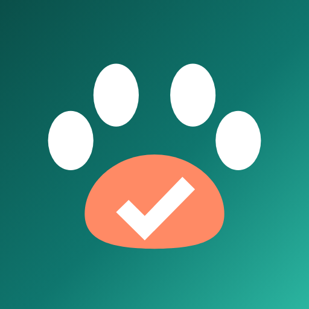

Fedtail – Shared Pet Care
See at a glance who fed, walked or cared for your pet today. Log care with one tap, get reminders, share the week with your family. Works offline, no account, your data stays on your phone.
Get it on Google Play
Highlights
- One-tap Done for meals, water, walks, litter, play and grooming
- Reminders, important dates (birthdays, vaccines, vet visits) and a home-screen widget
- Weekly care card and status messages you can share on WhatsApp
- Sitter instructions as a PDF (Pro)
- English, हिन्दी, Español, Português, Bahasa Indonesia, Deutsch, Français